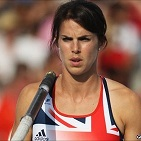
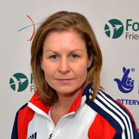
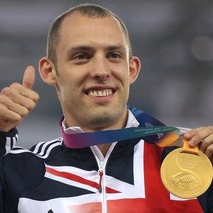

|  | KATE DENNISON POLE VAULT | |
 |
STUART HAYES TRIATHLON | |
|  | SARAH SYMINGTON CYCLING | |
|  | DAI GREENE 400m HURDLES |
| 6th Worlds championships Berlin 2009 6th European Championships Barcelona 200X Bronze Medal Commonwealth Games Dehli 200X? Beijing Olympics 2008 London Olympics 2012 12 British Records |

| World Ranked 3rd 2004 1st ITU Triathlon World Cup Kitzbühel 200X 2012 Olympic Games (selected to help the Brownlee brothers secure Gold and Bronze medals) 1st Life Time Tri Oceanside 2013 |

| Athens Olympic Games 2004 Stage Win Tour De Lude 2002 & 2003 & 2004 5th Montreal World Cup 2003 6th Philadelphia World Cup 2003 Commonwealth Games Manchester 2002 2nd Tour of Spain 2001 5th Tour of Holland 2001 3rd Sydney World Cup 2001 6th Sydney Olympic Games 2000 4th World Championships 2000 1st Tour of Quebec 2000 3rd Australian World Cup 1999 2nd Tour of Snowy 1999 UK National Criterion Champion 1999 Commonwealth Games Kuala Lumpur 1998 |

| World Champion 2011 European Champion 2010 Commonwealth Champion 2010 |